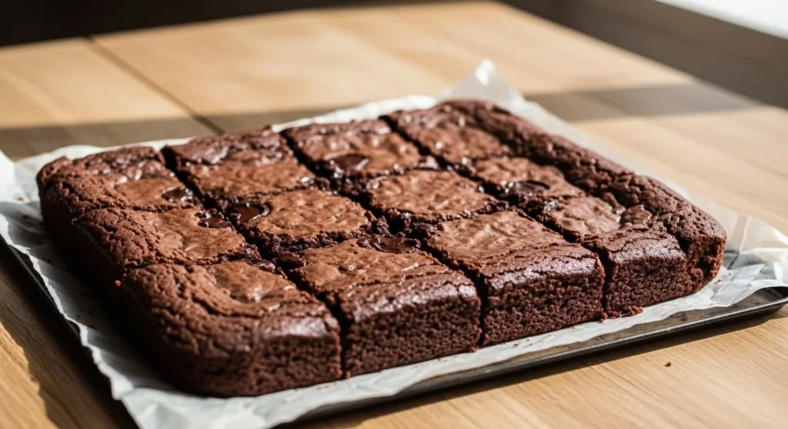

Chocolate Brownies
Easy homemade brownies, loaded with decadent chocolate flavor, they are gooey and thick with crispy edges.
PREP TIME
10 mins
COOK TIME
35 mins
SERVINGS16 brownies
DIFFICULTY
Easy

Ingredients List
- 1 cup unsalted butter 226g
- 2 cups granulated sugar 400g
- ¼ teaspoon baking soda
- 1½ teaspoon baking powder
- 1 teaspoon salt
- ¾ cup unsweetened cocoa powder 75g
- 3 large eggs room temperature
- 1 tablespoon vanilla extract
- 1 cup all-purpose flour 120g
- 1½ cups semisweet chocolate chips 270g
Instructions
- Preheat the oven to 350°F. Lightly grease an 8x8-inch baking pan with baking spray and line it with parchment paper.
- In a large microwave-safe bowl, melt the butter in the microwave in 20-second intervals stirring between each one until fully melted, about 2 minutes. Add the sugar and cocoa and whisk vigorously for 30 seconds. (This forms the crackly top!) Whisk in the eggs, vanilla, and salt.
- Add the flour and chocolate chips and mix together with a spatula until just combined. Spread the batter into the prepared pan. (You can sprinkle the top with more chocolate chips, if desired.)
- Bake for about 35 to 40 minutes for super fudgy brownies, or up to 55 minutes for cakey brownies. (Test them by inserting a toothpick into the center. For fudgy brownies, it should have a little smear of batter or several moist crumbs. For cakey brownies, it should only have a few crumbs and be mostly clean.) Let the brownies cool completely in the pan before slicing.
Nutrition Facts
| NUTRIENT | AMOUNT PER SERVING |
|---|---|
| Calories | 349kcal |
| Carbohydrates | 42g |
| Protein | 4g |
| Saturated Fat | 12g |
| Monounsaturated Fat | 5g |
| Cholestorol | 66mg |
| Sodium | 163mg |
| Fiber | 3g |
| Sugar | 31g |
| Vitamin A | 414IU |
Tips
- When melting the butter in the microwave, stop and stir it every 20 seconds to help prevent it from popping, splattering, and making a huge mess in your microwave.
- Add a topping Once the brownies have cooled, you can spread chocolate ganache or raspberry buttercream on top, or dust the brownies with powdered sugar.
- Measure the flour accurately. Brownies need just enough flour to hold everything together. Using too much flour results in dry brownies. The best way to measure flour accurately is by using a kitchen scale. If you don't have one, fluff your flour with a spoon, sprinkle it into a measuring cup, and use a knife to level it off.
Adapted from Preppy Kitchen